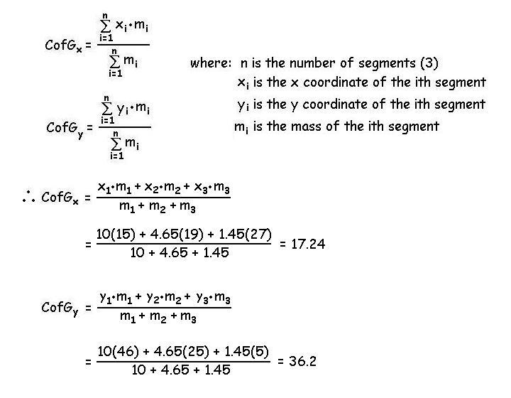

Anthropometry (Continued)
CofG location within a single segment:
Given the XY coordinates of the proximal and distal ends of a segment, we can find the coordinates of the location of the segment's CofG. Consider the thigh segment shown below with hip coordinates of (8,25) and knee coordinates of (23,8) and find the coordinates of the CofG.

In this case, we started at the proximal end (Hip) and moved toward the CofG. The steps are to start at the proximal coordinate and move toward the distal end which was the positive X direction and negative Ydirection. The distance moved was table value times the segment length in each direction which is the difference in the coordinates between the proximal and distal ends.

CofG location of a multi-linked segment system:
The human body is an example of a system of many linked segments. In order to find the location of the CofG of a multi-linked segment system, we calculate a weighted average of the locations of the centers of gravity of all of the segments. This method will be shown using the three linked segments that comprise the lower extremity. Assume that we have completed the above precedure for the thigh, leg and foot segments such that we know the locations of the CofG for each. Also, assume that we have used the tables to determine the mass of each segment. Now we can find the CofG of this multi-linked system.

Solution: The equations below show how the weighted average of each segment is found for the X and Y coordinates.
